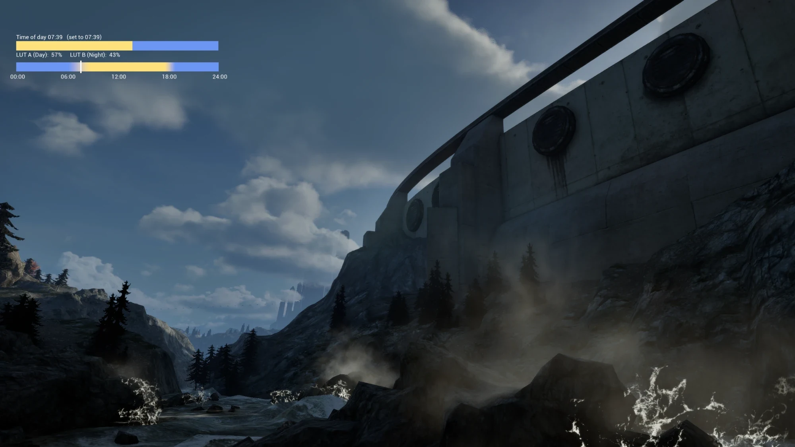

Color
LUT blending
LUT blending lets one volume hold two complete color grades and blend between them. It's not blending only two LUT textures, each grade has all of the color correction settings as well. So you can, for example, give the shadows a warmer tint close to the camera and a colder one in the distance.
The two grades are ChannelA and ChannelB in the Color Correction category. ChannelA is always there. ChannelB appears once you pick a blend mode that uses it.
The blending is cached heavily, so on average the LUT pass runs less often than in the engine's own post-processing. This saves some performance.
Blend modes
Set Blend Mode in the LUT category. Only one mode can be active at a time.
| Blend Mode | What it does |
|---|---|
| Uniform (Screen-Wide) | The default. Only ChannelA is used, it works the same as the engine's post-processing volume. |
| Depth-Based (Near to Far) | ChannelA close to the camera, ChannelB far away. |
| Custom Mask | A grayscale texture decides where each channel shows on screen. |
| Time of Day | ChannelA during the day, ChannelB at night, blended by the current time. |
Blend Sharpness (default 1, range 0.1 to 10) appears for Depth-Based and Custom Mask. It controls the transition. Higher values give a harder edge between the two grades.
Depth-based blending
Everything closer than Blend Distance Start uses ChannelA, everything beyond Blend Distance End uses ChannelB, and the space between is a smooth blend. You'll find these in the Depth Blend group.
| Setting | What it does | Default |
|---|---|---|
| Blend Distance Start | Distance in meters where the blend from ChannelA to ChannelB begins. | 15 |
| Blend Distance End | Distance in meters where ChannelB is fully active. Always keep it larger than Start. | 25 |
| Invert Depth Blend | Swaps the direction, so near pixels use ChannelB and far pixels ChannelA. | Off |

It's also an easy way to make distant fog. You can use a LUT for that or the color correction settings. I used both in the example.
Custom mask blending
Add a grayscale texture as the Custom Blend Mask. Black shows ChannelA, white shows ChannelB and grey mixes them. The texture is stretched to fill the screen whatever its size or aspect ratio.
This could be really useful for weapon scopes. You can tint, desaturate or darken what's seen through the scope or everything around it.
It works for UI too. Unreal can blur and tint the background of a widget, but it can't change the colors of the scene behind it. With a custom mask you can saturate or desaturate the scene behind a HUD element.
Virtual textures don't work with post-processing, you will get a warning if you use one.
Time-of-Day blending
In this mode ChannelA is the day look and ChannelB the night look. You tell HLSLens what time it is and it blends the LUTs and the color correction settings for you. This way you don't need two volumes with weights that have to be changed by hand.
Passing in the time
The time goes to the Post Process Settings Subsystem:
- Open a Blueprint that knows the time, for example your clock Blueprint or a day and night system.
- Search for Post Process Settings Subsystem in the graph.
- Drag off it and type Set Time to see the setters, then pick the one that matches your time format.
- Call it regularly, every frame or every second, depending on how smooth you want it.
| Function | Takes |
|---|---|
| Set Time Of Day Hours 24 | Decimal hours. 14.5 is 2:30 PM. |
| Set Time Of Day Hours Minutes | Hours and minutes as two integers. |
| Set Time Of Day Continental 2400 | 0 to 2400. 1430 is 2:30 PM. |
| Set Time Of Day Normalized | 0 to 1. 0.25 is 6 AM, 0.5 noon, 0.75 6 PM. |
| Set Time Of Day Timecode | An Unreal Timecode. |
Values outside the range wrap around, so 25 hours is 1 AM.
Time jumps
If the time jumps by more than 15 minutes, for example when the player sleeps or you skip time in a cutscene, the blend catches up smoothly in a fraction of a second instead of snapping. You can change that with Set Time Smoothing: the first value is how many seconds it takes to close half the gap (0.4 by default, 0 turns smoothing off). The second value sets how big a jump in minutes counts. After a level load or whenever you do want a hard cut, call SnapTimeOfDayNormalized instead.
When day and night start
The Time of Day: Time thresholds group in the LUT category sets the transitions. Each threshold has hours and minutes (0 to 59).
| Threshold | What it means | Default |
|---|---|---|
| Night to Day Start | The day look starts blending in. | 5:00 |
| Night to Day End | The night look is fully gone. | 6:00 |
| Day to Night Start | The night look starts blending in. | 18:00 |
| Day to Night End | Fully night. | 19:00 |
So with the defaults it's fully night until 5:00, fully day from 6:00 to 18:00 and fully night again after 19:00. The blend in between eases in and out rather than moving at a constant speed.
To see what the blend is doing, turn on the overlay with r.HLSLens.TimeOfDay.Debug 1. It shows the current time, how much of each LUT is used and a 24-hour timeline.

